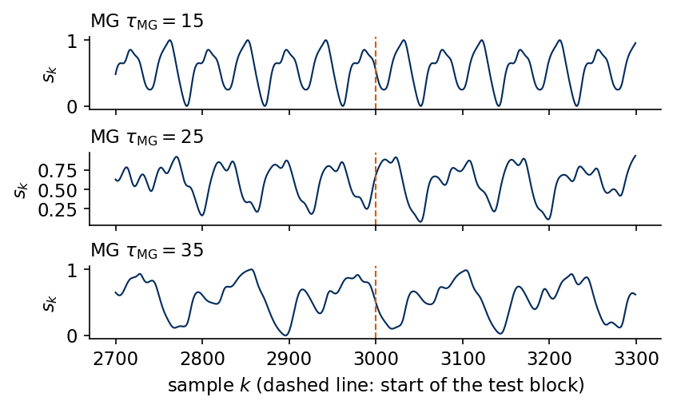
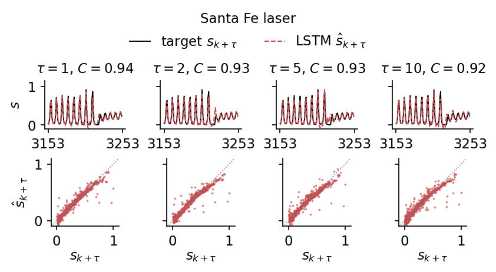
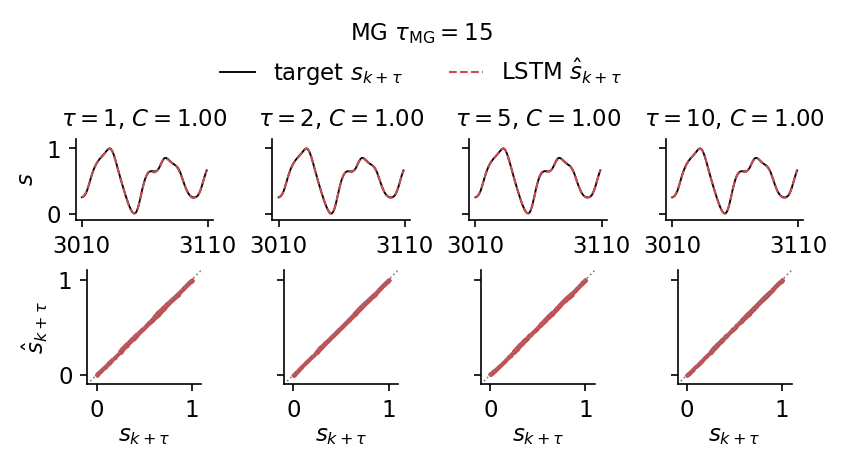
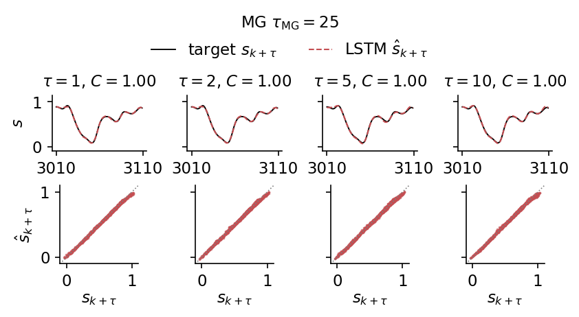
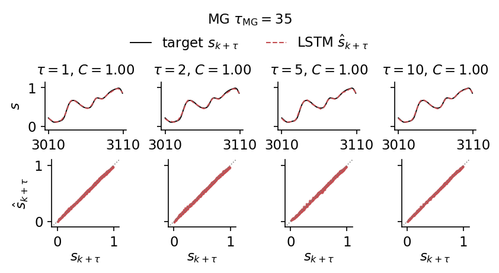
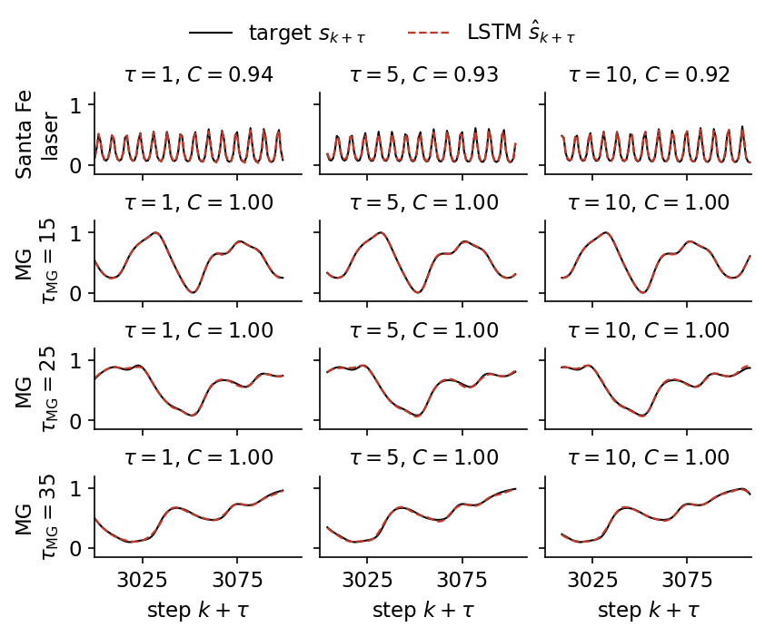
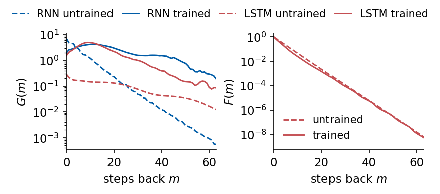
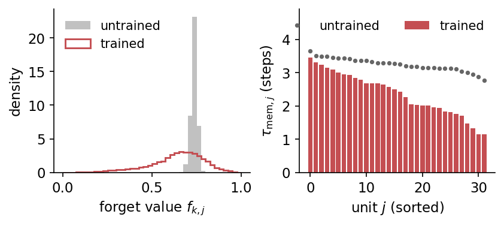
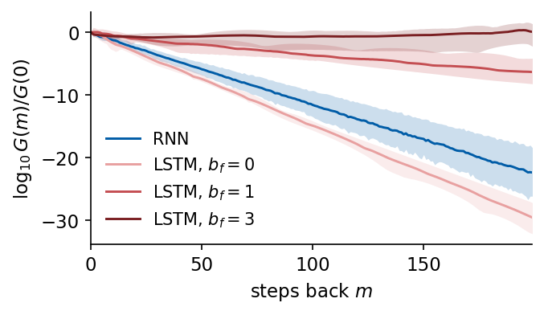

Deep Learning for Scientific Discovery, Jagiellonian University. Author Marcin Płodzień.
Measured records often carry information on several time scales, such as daily and seasonal cycles in climate data, fast and slow rhythms in physiology, or fast reactions and slow drifts in chemical systems. The long short-term memory network extends the recurrent network by gates that decide at every step which part of its memory to keep, and it is widely used to forecast and classify sequences in all of these fields.
A forecasting model receives the past of a measured signal \(s_1,s_2,\dots,s_k\) and returns the future values \(\hat s_{k+\tau}\) for the leads \(\tau=1,\dots,50\). The model is a long short-term memory (LSTM) network, a recurrent network whose internal memory is controlled by learned gates, used as a direct multi-horizon forecaster. It reads the last \(L=64\) values one after the other, starting from a zero state, and a linear readout of its last hidden state returns all 50 leads at once, so that output \(\tau\) is the forecast \(\hat s_{k+\tau}\) and no prediction is ever fed back as an input.
The main test signal is the Santa Fe laser, the measured intensity of a chaotic far-infrared laser whose pulses grow and then collapse at irregular times. The signal and the forecasting protocol determine the meaning of the scores (Sections 1 and 2). Persistence, the autoregressive model and the nonlinear vector autoregression give reference values that require only a linear solve (Section 3). The simple recurrent network shows the idea of a learned state and the problem of vanishing gradients (Section 4), and the LSTM cell answers it with a gated cell state (Section 5). We implement the cell in JAX, check it against the flax library cells (Section 6), train it (Section 7) and build the same forecaster from the library cell nnx.LSTMCell (Section 8). The results on Santa Fe (Section 9) are followed by three Mackey–Glass signals, a limit cycle and two chaotic regimes (Section 10). The trained internal dynamics can be examined on Santa Fe. We measure how far back the gradients reach (Section 11), which memory times the forget gates choose (Section 12), how the result depends on the hidden size and the random seed (Section 13), and how the forget gate keeps gradients alive over long windows (Section 14). This analysis of Sections 11 to 14 goes deeper than the lecture, which uses only its main results.
The networks are flax.nnx modules, the optimiser comes from optax, the time loop is a jax.lax.scan, and every training epoch is one jit-compiled program.
Google Colab execution 1. Go to https://colab.research.google.com → File → Upload notebook. Execution starts with JAX_PLATFORMS=cpu. The complete recorded run took 15.5 minutes on CPU; your runtime depends on hardware and system load. 2. jax, flax, optax, scikit-learn and matplotlib are pre-installed in Colab. 3. Upload the file santafe_laser.txt (Santa Fe laser data, set A) into a folder data next to the notebook. 4. Run the cells in order. Later cells use variables defined earlier.
Code
import osos.environ["JAX_PLATFORMS"] ="cpu"# run JAX on the CPU (set before importing jax)import json, timeimport numpy as npimport matplotlib as mplimport matplotlib.pyplot as pltfrom matplotlib.patches import FancyBboxPatch, Circlefrom scipy.signal import find_peaksimport jax, jax.numpy as jnpjax.config.update("jax_enable_x64", True) # signals and ridge regressions in float64, networks in float32import optaximport flaxfrom flax import nnximport sklearnfrom sklearn.linear_model import Ridge as SkRidge# common style of the notebook figuresmpl.rcParams.update({"font.size": 14, "axes.labelsize": 15, "axes.titlesize": 15,"xtick.labelsize": 13, "ytick.labelsize": 13, "legend.fontsize": 12,"figure.titlesize": 16, "lines.linewidth": 2.0,"axes.spines.top": False, "axes.spines.right": False, "legend.frameon": False})# slide figures are drawn at their printed size (5.5 in = full width of a slide), so these are true font sizesSLIDE_RC = {"font.size": 11, "axes.labelsize": 11, "axes.titlesize": 11, "xtick.labelsize": 11,"ytick.labelsize": 11, "legend.fontsize": 11, "lines.linewidth": 1.4, "figure.dpi": 150}UJBlue, UJNavy, DSOrange, UJGray ="#005CA7", "#002B5C", "#D35A05", "#5A6270"# one colour and line style per model, used in every figureSTYLE = {"persistence": dict(color="0.55", ls=":"), "AR": dict(color="0.35", ls="--"),"NVAR": dict(color=DSOrange, ls="--"), "RNN": dict(color=UJBlue, ls="-"),"LSTM": dict(color="#C44E52", ls="-")}OUT ="figures"os.makedirs(OUT, exist_ok=True)def save(fig, name):# slide figures are created at their printed size and saved as PDF (slides) and PNGfor ext in ("pdf", "png"): fig.savefig(f"{OUT}/{name}.{ext}", dpi=300, bbox_inches="tight", pad_inches=0.02)nums = {} # every number a slide may need, written to the numbers file at the endt_start = time.time()print("jax", jax.__version__, "| flax", flax.__version__, "| optax", optax.__version__,"| scikit-learn", sklearn.__version__)
The Santa Fe series (data set A of the Santa Fe time-series competition) is the intensity of a far-infrared NH\(_3\) ring laser recorded by Hübner, Abraham and Weiss [Phys. Rev. A 40, 6354 (1989), doi:10.1103/PhysRevA.40.6354]. The laser emits regular pulsations whose amplitude grows over many periods until it suddenly collapses, after which the growth starts again. Hübner et al. describe these pulsations as low-dimensional chaos of the Lorenz type and compare them with the Lorenz–Haken model of a single-mode laser. Low-dimensional chaos is irregular, never-repeating motion generated by a deterministic law with only a few variables, in which small differences between states grow exponentially in time. For a forecaster this structure poses two different problems, since the next few pulses follow the regular oscillation and are easy to extrapolate, while the moment of a collapse depends on the slow growth of the amplitude and is the hard part.
We load the first \(N=4000\) samples and rescale them to \([0,1]\). Three quantities characterise the record. The pulsation period is read off the largest peak of the power spectrum \(|\hat x(\nu)|^2\), the squared magnitude of the Fourier transform \(\hat x\) at frequency \(\nu\), of the centred training block \(x_k=s_k-\bar s\). The autocorrelation function \[\rho(l)=\frac{\sum_k x_kx_{k+l}}{\sum_k x_k^2} \tag{1}\] shows how fast the memory of the signal decays with the lag \(l\). Finally we locate the collapses. With the pulse heights \(a_j\), the values of \(s\) at its local maxima, a collapse is a pulse followed by one lower than \(0.4\,a_j\).
Code
def santafe(path="data/santafe_laser.txt"):return np.loadtxt(path).astype(float)# Common protocol: N = 4000 samples; train = first 3000 (last 500 of them = validation),# test = last 1000; rescale to [0,1] with min/max of the training block; leads tau = 1..50.N_SAMPLES, N_TRAIN, N_VAL, TAU_MAX =4000, 3000, 500, 50def rescale01(s, n_train=N_TRAIN): lo, hi = s[:n_train].min(), s[:n_train].max()return (s - lo) / (hi - lo)raw = santafe()[:N_SAMPLES]s_sf = rescale01(raw)print(f"N = {len(s_sf)}, raw intensity range [{raw.min():.0f}, {raw.max():.0f}],"f" rescaled test range [{s_sf[N_TRAIN:].min():.3f}, {s_sf[N_TRAIN:].max():.3f}]")# pulsation period from the largest peak of the power spectrum of the training blockx = s_sf[:N_TRAIN] - s_sf[:N_TRAIN].mean()power = np.abs(np.fft.rfft(x)) **2k_peak = np.argmax(power[1:]) +1period = N_TRAIN / k_peak# autocorrelation function rho(l) = <x_k x_{k+l}> / <x_k^2> of the training blockacf = np.array([np.dot(x[:N_TRAIN - l], x[l:]) for l inrange(201)]) / np.dot(x, x)acf_peaks = find_peaks(acf)[0]# pulse heights a_j = local maxima of s; a collapse is a pulse followed by one less than 0.4 a_jpk = find_peaks(s_sf)[0]amp = s_sf[pk]collapse = pk[np.nonzero(amp[1:] <0.4* amp[:-1])[0]]collapse_test = collapse[collapse >= N_TRAIN]print(f"period from the power spectrum: {period:.2f} samples; first maxima of the ACF at lags {acf_peaks[:4]}"f" with rho = {np.round(acf[acf_peaks[:4]], 2)}")print(f"collapses (pulse followed by one below 0.4 of its height) at samples {collapse}; in the test block {collapse_test}")nums["santafe"] =dict(period=float(period), acf_first_peak_lag=int(acf_peaks[0]), acf_first_peak=float(acf[acf_peaks[0]]), n_collapses=int(len(collapse)), collapse_test=[int(c) for c in collapse_test])
N = 4000, raw intensity range [2, 255], rescaled test range [0.004, 1.000]
period from the power spectrum: 7.43 samples; first maxima of the ACF at lags [ 8 15 22 30] with rho = [0.76 0.63 0.43 0.34]
collapses (pulse followed by one below 0.4 of its height) at samples [ 602 1057 2236 3213]; in the test block [3213]
We print the pulsation period, the first four maxima of \(\rho(l)\) and the positions of the collapses, and plot the record with its three blocks, an enlarged stretch around the collapse in the test block, and the autocorrelation function with its maxima marked.
The upper panel shows the whole record with the fitting, validation and test blocks of the forecasting protocol, and the lower panel enlarges the collapse inside the test block. The power spectrum gives a period of 7.43 samples, and the autocorrelation \(\rho(l)\) has its maxima at the lags 8, 15, 22 and 30, close to multiples of this period, with heights 0.76, 0.63, 0.43 and 0.34. The decay of these maxima is the loss of phase memory of the chaotic pulsation, a few periods after which the past value at the same phase carries little information about the present. The collapse criterion marks the four sharpest collapses, at the samples 602, 1057, 2236 and 3213. The other drops of the amplitude visible in the record are less abrupt and are not counted. Only one marked collapse, at sample 3213, falls into the test block, so the test scores are dominated by the regular pulsations between collapses.
Mackey–Glass signals
The second family of test signals comes from the Mackey–Glass delay equation [Mackey and Glass, Science 197, 287 (1977), doi:10.1126/science.267326], \[\dot s(t)=\frac{\beta\,s(t-\tau_{\rm MG})}{1+s(t-\tau_{\rm MG})^{10}}-\gamma\,s(t),\qquad \beta=0.2,\ \gamma=0.1, \tag{2}\] a model of the production of blood cells in which the delay \(\tau_{\rm MG}\) is the maturation time. The state of a delay equation is the whole history on the interval \([t-\tau_{\rm MG},t]\), so the system is infinite-dimensional, and the delay controls the dynamics. We integrate it with the fourth-order Runge–Kutta method (RK4), a standard integrator that advances the solution by one step from four evaluations of the right-hand side, at step \(h=0.1\), interpolate the delayed value linearly at half steps, start from the constant history \(s=1.2\), discard the first 3000 steps and keep one sample per time unit. The delay \(\tau_{\rm MG}=15\) gives a limit cycle, a closed orbit that the state repeats periodically, \(\tau_{\rm MG}=25\) weak chaos, an irregular oscillation that never repeats, and \(\tau_{\rm MG}=35\) developed chaos. Each signal is rescaled to \([0,1]\) with its training block, like the laser.
Code
# Mackey-Glass: dx/dt = beta x(t-tau)/(1+x(t-tau)^n) - gamma x, beta=0.2, gamma=0.1, n=10;# RK4 with h=0.1, the delayed value at half steps by linear interpolation, constant history# x=1.2 on [-tau, 0], first 3000 fine steps discarded, every 10th point kept (unit sampling).def mackey_glass(tau, n_samples, h=0.1, x0=1.2, transient=3000, every=10, beta=0.2, gamma=0.1, n=10): lag =int(round(tau / h)) f =lambda x, xd: beta * xd / (1.0+ xd**n) - gamma * xdef step(buf, _):# buf = (x[i-lag], ..., x[i]) : the delay window, length lag+1 x, xd0, xd1 = buf[-1], buf[0], buf[1] xdh =0.5* (xd0 + xd1) k1 = f(x, xd0); k2 = f(x +0.5*h*k1, xdh); k3 = f(x +0.5*h*k2, xdh); k4 = f(x + h*k3, xd1) xn = x + h/6.0*(k1 +2*k2 +2*k3 + k4)return jnp.concatenate([buf[1:], xn[None]]), xn n_steps = transient + n_samples * every _, xs = jax.lax.scan(step, jnp.full(lag +1, x0), None, length=n_steps) x = np.concatenate([np.full(lag +1, x0), np.asarray(xs)])return x[transient::every][:n_samples]SIGNALS = ["SantaFe", "MG15", "MG25", "MG35"]LABEL = {"SantaFe": "Santa Fe laser", "MG15": r"MG $\tau_{\rm MG}=15$", "MG25": r"MG $\tau_{\rm MG}=25$","MG35": r"MG $\tau_{\rm MG}=35$"}sig = {"SantaFe": s_sf}for tau_mg in (15, 25, 35): sig[f"MG{tau_mg}"] = rescale01(mackey_glass(tau_mg, N_SAMPLES))for name in SIGNALS[1:]: x = sig[name][:N_TRAIN] - sig[name][:N_TRAIN].mean() pw = np.abs(np.fft.rfft(x)) **2print(f"{name:5s} N = {len(sig[name])}, test range [{sig[name][N_TRAIN:].min():.3f}, {sig[name][N_TRAIN:].max():.3f}],"f" largest spectral peak at period {N_TRAIN / (np.argmax(pw[1:]) +1):.1f} samples")with mpl.rc_context(SLIDE_RC): fig, axs = plt.subplots(3, 1, figsize=(5.5, 3.3), sharex=True, layout="constrained")for ax, name inzip(axs, SIGNALS[1:]): ax.plot(np.arange(N_TRAIN -300, N_TRAIN +300), sig[name][N_TRAIN -300:N_TRAIN +300], color=UJNavy, lw=1.0) ax.axvline(N_TRAIN -0.5, color=DSOrange, ls="--", lw=1.0) ax.set_ylabel(r"$s_k$"); ax.set_title(LABEL[name], loc="left") axs[-1].set_xlabel("sample $k$ (dashed line: start of the test block)") save(fig, "fig_lab039_mackey_glass"); plt.show()
MG15 N = 4000, test range [0.000, 1.000], largest spectral peak at period 44.8 samples
MG25 N = 4000, test range [-0.035, 1.027], largest spectral peak at period 73.2 samples
MG35 N = 4000, test range [0.004, 0.990], largest spectral peak at period 125.0 samples

The three signals change from a strictly periodic oscillation at \(\tau_{\rm MG}=15\) to irregular oscillations at \(\tau_{\rm MG}=25\) and \(35\). The largest spectral peak lies at the periods 44.8, 73.2 and 125.0 samples, so one oscillation of these signals spans tens of samples, against 7.4 samples for the laser. The window of \(L=64\) values therefore covers about one oscillation of the chaotic Mackey–Glass signals and more than eight pulses of the laser. The test block of \(\tau_{\rm MG}=25\) slightly exceeds the training range, from \(-0.035\) to \(1.027\).
2. Forecasting protocol and scores
The \(N=4000\) samples are split in time order. The first 3000 form the training block, and its last 500 samples are used for validation. The final 1000 samples are the test block. The signal is rescaled to \([0,1]\) with the minimum and maximum of the training block only, so the test block may slightly exceed this interval.
A forecast is made at an origin \(k\) from the past and returns all leads \(\tau=1,\dots,50\) at once. This is direct forecasting, one output per lead, and the model never sees its own predictions. Every model reads at most the window of the last \(L=64\) values, \[\mathbf v_k=(s_{k-L+1},\dots,s_{k-1},s_k)\in\mathbb R^{L},\qquad \mathbf y_k=(s_{k+1},\dots,s_{k+50})\in\mathbb R^{50}. \tag{3}\] The origins are chosen so that no target crosses a block boundary. Fitting uses the origins \(k=63,\dots,2449\) (targets inside the first 2500 samples), validation the origins \(k=2499,\dots,2949\) and testing the origins \(k=2999,\dots,3949\). A window may reach back into an earlier block, since the inputs are past values known at the time of the forecast.
origins: fit 2387 (63..2449), validation 451 (2499..2949), test 951 (2999..3949)
For each lead \(\tau\) we compare the predictions \(\hat s_{k+\tau}\) with the true values \(s_{k+\tau}\) over the \(n\) test origins with the Pearson correlation coefficient \[r(\tau)=\frac{\sum_k(\hat s_{k+\tau}-\bar{\hat s}_\tau)(s_{k+\tau}-\bar s_\tau)}{\sqrt{\sum_k(\hat s_{k+\tau}-\bar{\hat s}_\tau)^2\,\sum_k(s_{k+\tau}-\bar s_\tau)^2}}, \tag{4}\] where the bars are averages over the test origins. It measures how well the shape of the forecast follows the truth, independently of an offset and a scale factor. The forecast capacity \(C(\tau)=r(\tau)^2\in[0,1]\) is the fraction of the variance of \(s_{k+\tau}\) that a linear rescaling of the forecast explains. Its sum over the 50 leads, the total capacity \[C_{\rm tot}=\sum_{\tau=1}^{50}C(\tau)\le 50, \tag{5}\] summarises a whole curve, and the skill horizon \(\tau_{1/2}\) is the first lead with \(C(\tau)<0.5\). All forecasts are scored by \(C(\tau)\), \(C_{\rm tot}\) and \(\tau_{1/2}\).
Code
@jax.jitdef pearson_r(pred, true):# pred, true: (n, TAU_MAX); correlation over the n origins, one value per lead pc, tc = pred - pred.mean(0), true - true.mean(0)return jnp.sum(pc * tc, 0) / jnp.sqrt(jnp.sum(pc **2, 0) * jnp.sum(tc **2, 0))def score(pred, true):# dictionary with r(tau), C(tau) = r^2, C_tot and the skill horizon tau_1/2 r = np.asarray(pearson_r(jnp.asarray(pred, jnp.float64), jnp.asarray(true, jnp.float64))) C = r **2 below = np.nonzero(C <0.5)[0]returndict(r=r, C=C, Ctot=float(C.sum()), tau_half=int(below[0] +1) iflen(below) elseNone)# check the JAX correlation against numpy on random datarng = np.random.default_rng(0)a, b = rng.normal(size=(500, TAU_MAX)), rng.normal(size=(500, TAU_MAX))r_np = np.array([np.corrcoef(a[:, j] +0.5* b[:, j], b[:, j])[0, 1] for j inrange(TAU_MAX)])print("max |r_jax - r_numpy| =", np.abs(score(a +0.5* b, b)["r"] - r_np).max())
max |r_jax - r_numpy| = 6.106226635438361e-16
3. Persistence, AR and NVAR baselines
Persistence repeats the last value, \(\hat s_{k+\tau}=s_k\). It needs no fitting and sets the floor that any model must beat. The direct autoregressive (AR) model of order \(p\) and the nonlinear vector autoregression (NVAR) are ridge regressions on features of the delay vector \(\mathbf d_k=(s_k,s_{k-1},\dots,s_{k-p+1})\), \[\hat{\mathbf y}_k=W^\top\boldsymbol\phi(\mathbf d_k)+\mathbf b,\qquad \boldsymbol\phi_{\rm AR}=\mathbf d_k,\qquad \boldsymbol\phi_{\rm NVAR}=\big(\mathbf d_k,\ \{s_{k-i}s_{k-j}\}_{0\le i\le j<p}\big), \tag{6}\] where \(W\) has one column per lead and NVAR has \(p+p(p+1)/2\) features [Gauthier et al., Nat. Commun. 12, 5564 (2021), doi:10.1038/s41467-021-25801-2]. Ridge regression minimises \(\sum_k\|\hat{\mathbf y}_k-\mathbf y_k\|^2+\beta\|W\|^2\). With centred features \(\Phi_c\) and centred targets \(Y_c\) the solution is \[W=(\Phi_c^\top\Phi_c+\beta I)^{-1}\Phi_c^\top Y_c,\qquad \mathbf b=\bar{\mathbf y}-W^\top\bar{\boldsymbol\phi}, \tag{7}\] so the intercept \(\mathbf b\) is not penalised. The order \(p\) and the ridge strength \(\beta\) are chosen by the largest \(C_{\rm tot}\) on the validation origins.
Code
def ridge_fit(F, Y, beta):# centred ridge regression, F: (n, d) features, Y: (n, m) targets -> W (d, m), b (m,) fm, ym = F.mean(0), Y.mean(0) Fc, Yc = F - fm, Y - ym W = jnp.linalg.solve(Fc.T @ Fc + beta * jnp.eye(F.shape[1]), Fc.T @ Yc)return W, ym - fm @ Wdef delay_features(s, ks, p):# rows (s_k, s_{k-1}, ..., s_{k-p+1})return s[ks[:, None] - np.arange(p)[None, :]]def nvar_features(s, ks, p):# delay vector and all quadratic monomials s_{k-i} s_{k-j}, i <= j d = delay_features(s, ks, p) iu, ju = np.triu_indices(p)return np.concatenate([d, d[:, iu] * d[:, ju]], axis=1)GRID_BETA = (1e-8, 1e-6, 1e-4, 1e-2, 1.0)GRID_P = {"AR": (4, 8, 16, 24, 32, 48, 64), "NVAR": (2, 4, 8, 12, 16, 24, 32)}FEATS = {"AR": delay_features, "NVAR": nvar_features}def ridge_model(s, kind):# choose (p, beta) by validation C_tot, return the test predictions and the chosen setting _, Yf = windows(s, K_FIT); _, Yv = windows(s, K_VAL); _, Yt = windows(s, K_TEST) best = (-1.0, None, None)for p in GRID_P[kind]: Ff, Fv = FEATS[kind](s, K_FIT, p), FEATS[kind](s, K_VAL, p)for beta in GRID_BETA: W, b = ridge_fit(Ff, Yf, beta) ctot = score(Fv @ W + b, Yv)["Ctot"]if ctot > best[0]: best = (ctot, p, beta) _, p, beta = best Ff, Ft = FEATS[kind](s, K_FIT, p), FEATS[kind](s, K_TEST, p) W, b = ridge_fit(Ff, Yf, beta)returndict(pred=np.asarray(Ft @ W + b), p=p, beta=beta, n_feat=Ff.shape[1], **score(Ft @ W + b, Yt))res = {name: {} for name in SIGNALS} # res[signal][model] = scores and test predictionsR = res["SantaFe"] # the Santa Fe results, used most oftenfor name in SIGNALS: U_t, Y_t = windows(sig[name], K_TEST) res[name]["persistence"] =dict(pred=np.repeat(U_t[:, -1:], TAU_MAX, 1), **score(np.repeat(U_t[:, -1:], TAU_MAX, 1), Y_t))for kind in ("AR", "NVAR"): res[name][kind] = ridge_model(sig[name], kind)for m in ("persistence", "AR", "NVAR"): r_ = res[name][m] extra =f" (p = {r_['p']}, beta = {r_['beta']:.0e}, {r_['n_feat']} features)"if m !="persistence"else""print(f"{name:8s}{m:12s} C_tot = {r_['Ctot']:5.1f}, tau_1/2 = {str(r_['tau_half'] or'>50'):>3s}"+ extra)U_test, Y_test = windows(s_sf, K_TEST)
On the laser, persistence reaches \(C_{\rm tot}=5.5\) and drops below \(C=0.5\) already at \(\tau=1\), since one step is a seventh of a pulsation period. The AR model with \(p=64\) delays reaches \(C_{\rm tot}=16.5\) and \(\tau_{1/2}=16\), and NVAR with \(p=32\) delays and 560 features reaches \(34.7\) and \(\tau_{1/2}=42\). The quadratic features double the capacity of the linear model, which shows how nonlinear the map from the past window to the future of the laser is. On the Mackey–Glass limit cycle (\(\tau_{\rm MG}=15\)) the linear AR model is already close to the maximum, with \(C_{\rm tot}=49.8\) against \(50.0\) for NVAR. In the chaotic regimes AR reaches 33.1 and 38.0 and NVAR 45.5 and 48.6 at \(\tau_{\rm MG}=25\) and \(35\).
Ridge regression with scikit-learn gives the same predictions, since Ridge with fit_intercept=True also centres the data and leaves the intercept unpenalised.
Code
for kind in ("AR", "NVAR"): p, beta = R[kind]["p"], R[kind]["beta"] _, Yf = windows(s_sf, K_FIT) sk = SkRidge(alpha=beta, fit_intercept=True).fit(FEATS[kind](s_sf, K_FIT, p), Yf) diff = np.abs(sk.predict(FEATS[kind](s_sf, K_TEST, p)) - R[kind]["pred"]).max()print(f"{kind:4s} (p = {p}): max |prediction JAX - prediction scikit-learn| = {diff:.2e}")
AR (p = 64): max |prediction JAX - prediction scikit-learn| = 1.39e-15
NVAR (p = 32): max |prediction JAX - prediction scikit-learn| = 2.92e-12
The JAX and scikit-learn predictions agree to \(10^{-15}\) for AR and to about \(3\times10^{-12}\) for NVAR, whose 560 features make the linear system less well conditioned.
4. Simple recurrent network
A recurrent neural network (RNN) reads the window one value at a time and keeps what it has seen in a hidden state \(\mathbf h_k\in\mathbb R^{n_h}\) [Elman, Cogn. Sci. 14, 179 (1990), doi:10.1207/s15516709cog1402_1], \[\mathbf h_k=\tanh\!\big(W_h\mathbf h_{k-1}+W_x s_k+\mathbf b\big),\qquad \hat{\mathbf y}_k=W_y\mathbf h_k+\mathbf b_y , \tag{8}\] with \(W_h\in\mathbb R^{n_h\times n_h}\), \(W_x\in\mathbb R^{n_h\times1}\), \(\mathbf b\in\mathbb R^{n_h}\) and the readout \(W_y\in\mathbb R^{50\times n_h}\), \(\mathbf b_y\in\mathbb R^{50}\). Every forecast starts from \(\mathbf h=0\) at the beginning of the window, the \(L=64\) values of \(\mathbf v_k\) are fed in order, and the 50 leads are read linearly from the last state. Output \(\tau\) is the forecast \(\hat s_{k+\tau}\), and no prediction is fed back.
Training needs the derivative of the loss with respect to the weights, and the chain rule through the unrolled sequence, called backpropagation through time (BPTT), carries it from the last state back to earlier ones. A change of the state \(\mathbf h_j\) reaches \(\mathbf h_k\) through the product of step Jacobians \[\frac{\partial\mathbf h_k}{\partial\mathbf h_j}=\prod_{i=j+1}^{k}D_iW_h,\qquad D_i=\mathrm{diag}\big(1-\mathbf h_i^2\big), \tag{9}\] where \(D_i\) holds the derivatives \(\tanh'=1-\tanh^2\in(0,1]\). An input \(m\) steps in the past contributes to the gradient through \(m\) such factors. When the factors shrink vectors, the product decays exponentially with \(m\), and the network receives almost no training signal from distant inputs. This is the vanishing gradient problem [Bengio, Simard and Frasconi, IEEE Trans. Neural Netw. 5, 157 (1994), doi:10.1109/72.279181]. When they stretch vectors, the gradient explodes [Pascanu, Mikolov and Bengio, ICML (2013), arXiv:1211.5063].
5. The LSTM cell
The long short-term memory (LSTM) network [Hochreiter and Schmidhuber, Neural Comput. 9, 1735 (1997), doi:10.1162/neco.1997.9.8.1735] was designed against the vanishing gradient. Next to the hidden state \(\mathbf h_k\in\mathbb R^{n_h}\) it carries a cell state \(\mathbf c_k\in\mathbb R^{n_h}\), and three gates with values in \((0,1)\) decide what is kept, written and shown. Every gate reads the previous hidden state together with the new input, stacked into one vector, \[[\mathbf h_{k-1},s_k]=\big(h_{k-1,1},\dots,h_{k-1,n_h},\,s_k\big)^\top\in\mathbb R^{n_h+1}. \tag{10}\] With the logistic sigmoid \(\sigma(a)=1/(1+e^{-a})\) and the elementwise (Hadamard) product \(\odot\), \((\mathbf a\odot\mathbf b)_j=a_jb_j\), one step of the cell is \[
\begin{aligned}
\mathbf f_k&=\sigma\big(W_f[\mathbf h_{k-1},s_k]+\mathbf b_f\big) &&\text{forget gate}\\
\mathbf i_k&=\sigma\big(W_i[\mathbf h_{k-1},s_k]+\mathbf b_i\big) &&\text{input gate}\\
\mathbf g_k&=\tanh\big(W_g[\mathbf h_{k-1},s_k]+\mathbf b_g\big) &&\text{candidate}\\
\mathbf o_k&=\sigma\big(W_o[\mathbf h_{k-1},s_k]+\mathbf b_o\big) &&\text{output gate}\\
\mathbf c_k&=\mathbf f_k\odot\mathbf c_{k-1}+\mathbf i_k\odot\mathbf g_k\\
\mathbf h_k&=\mathbf o_k\odot\tanh(\mathbf c_k),
\end{aligned} \tag{11}\] with \(W_f,W_i,W_g,W_o\in\mathbb R^{n_h\times(n_h+1)}\) and biases \(\mathbf b_f,\mathbf b_i,\mathbf b_g,\mathbf b_o\in\mathbb R^{n_h}\). The sigmoid and tanh act on each component. The forget gate \(\mathbf f_k\) sets the fraction of each component of \(\mathbf c_{k-1}\) that survives, the input gate \(\mathbf i_k\) the fraction of the candidate \(\mathbf g_k\in(-1,1)^{n_h}\) that is written, and the output gate \(\mathbf o_k\) the fraction of \(\tanh(\mathbf c_k)\) that appears in \(\mathbf h_k\). The forecaster is the same as for the RNN. The cell starts from \(\mathbf c=\mathbf h=0\), reads the window, and the readout \(\hat{\mathbf y}_k=W_y\mathbf h_k+\mathbf b_y\) acts on the last hidden state.
In the drawing of one step the line on top is the cell state, and the four blocks under it are the gates and the candidate, each fed by \([\mathbf h_{k-1},s_k]\).
Read from left to right, the drawing follows the equations. The forget gate multiplies the old cell state, the product \(\mathbf i_k\odot\mathbf g_k\) is added to it, and the output branch on the right squashes the new cell state with tanh and multiplies it by \(\mathbf o_k\). The cell-state line on top passes only through the elementwise operations \(\odot\) and \(+\).
Gradient along the cell state
The cell state is updated by an elementwise product and a sum, with no weight matrix and no squashing function between \(\mathbf c_{k-1}\) and \(\mathbf c_k\). Holding the gates fixed, the derivative along this direct path is diagonal, \[\left.\frac{\partial\mathbf c_k}{\partial\mathbf c_{k-1}}\right|_{\rm cell}=\mathrm{diag}(\mathbf f_k),\qquad \left.\frac{\partial\mathbf c_k}{\partial\mathbf c_{j}}\right|_{\rm cell}=\prod_{i=j+1}^{k}\mathrm{diag}(\mathbf f_i). \tag{12}\] The full Jacobian contains further terms, because \(\mathbf c_{k-1}\) also enters the gates through \(\mathbf h_{k-1}=\mathbf o_{k-1}\odot\tanh(\mathbf c_{k-1})\), and these terms pass through the weight matrices like the RNN product. The direct term involves no weight matrix, and each component \(j\) decays by the factor \(f_{i,j}\) per step, so the network can keep a gradient alive over many steps by holding its forget values close to 1. In the original LSTM the cell had a fixed self-connection of weight 1, the constant error carousel, through which errors flow back without decay. The forget gate, added by Gers, Schmidhuber and Cummins [Neural Comput. 12, 2451 (2000), doi:10.1162/089976600300015015], makes this factor learnable.
A unit with a constant forget value \(f\) keeps the fraction \(f^m=e^{-m/\tau_{\rm mem}}\) of its content after \(m\) steps, which defines the memory time \[\tau_{\rm mem}=-\frac{1}{\ln f}. \tag{13}\] For \(f=0.9\) this is 9.5 steps and for \(f=0.99\) it is 99.5 steps. Gers et al. recommend a positive initial forget bias, so that the cell starts by keeping information. We initialise \(\mathbf b_f=1\), which gives \(f=\sigma(1)\approx0.73\) and \(\tau_{\rm mem}\approx3.2\) steps for an input of zero, and let the training change it.
Parameter count
Each of the four blocks has a matrix of \(n_h(n_h+1)\) entries acting on \([\mathbf h_{k-1},s_k]\) and a bias of \(n_h\) entries, and the RNN has one such block. With the readout to 50 leads, \[P_{\rm LSTM}=4\big(n_h(n_h+1)+n_h\big)+50(n_h+1),\qquad P_{\rm RNN}=n_h(n_h+1)+n_h+50(n_h+1). \tag{14}\] For \(n_h=32\) this gives 4 \(\times\) 1088 + 1650 = 6002 and 1088 + 1650 = 2738 parameters, which we check against the parameter counts of the modules.
6. LSTM implementation in JAX
A cell is an nnx.Module with one method, cell(carry, s_k) -> (carry, h_k), the signature of the library cells. The carry is \(\mathbf h\) for the RNN and the pair \((\mathbf c,\mathbf h)\) for the LSTM. A cell acts on a batch, so \(s_k\) has shape \((B,1)\) and \(\mathbf h\) has shape \((B,n_h)\). Our LSTM cell stores the four matrices \(W_i,W_f,W_g,W_o\) as one nnx.Linear layer from \(n_h+1\) to \(4n_h\) outputs acting on the concatenation \([\mathbf h_{k-1},s_k]\), and splits the result into the four pre-activations. The module Recurrent runs any cell over the window with jax.lax.scan, which compiles the loop over the \(L\) steps once, and applies the linear readout to the last hidden state. The window has shape \((B,L,1)\) and scan iterates over the leading axis, so we swap the batch and time axes before the loop.
The input matrices use the LeCun normal initialisation (variance \(1/n_{\rm in}\)), the recurrent matrix of the RNN a random orthogonal matrix, whose singular values all equal 1, so that \(W_h\) alone neither shrinks nor grows the Jacobian product at the start, and the LSTM gets \(\mathbf b_f=1\) with all other biases zero.
Code
orthogonal = nnx.initializers.orthogonal()class RNNCell(nnx.Module):# h_k = tanh(W_x s_k + b + W_h h_{k-1})def__init__(self, n_x, n_h, *, rngs):self.n_h = n_hself.Wx = nnx.Linear(n_x, n_h, rngs=rngs) # W_x and bself.Wh = nnx.Linear(n_h, n_h, use_bias=False, kernel_init=orthogonal, rngs=rngs)def init_carry(self, B, dtype):return jnp.zeros((B, self.n_h), dtype)def__call__(self, h, s): h = jnp.tanh(self.Wx(s) +self.Wh(h))return h, hclass LSTMCell(nnx.Module):# one matrix on the concatenation [h_{k-1}, s_k] for the four blocks in the order (i, f, g, o)def__init__(self, n_x, n_h, *, rngs, forget_bias=1.0):self.n_h = n_hself.W = nnx.Linear(n_h + n_x, 4* n_h, rngs=rngs)self.W.bias[...] =self.W.bias[...].at[n_h:2* n_h].set(forget_bias) # b_f = 1 (Gers et al. 2000)def init_carry(self, B, dtype):return (jnp.zeros((B, self.n_h), dtype), jnp.zeros((B, self.n_h), dtype))def gates(self, carry, s): c, h = carry a_i, a_f, a_g, a_o = jnp.split(self.W(jnp.concatenate([h, s], axis=-1)), 4, axis=-1)return jax.nn.sigmoid(a_i), jax.nn.sigmoid(a_f), jnp.tanh(a_g), jax.nn.sigmoid(a_o)def__call__(self, carry, s): c, h = carry i, f, g, o =self.gates(carry, s) c = f * c + i * g # cell state: elementwise only h = o * jnp.tanh(c)return (c, h), hclass Recurrent(nnx.Module):# any cell run over the window, linear readout of the last hidden state to the outputsdef__init__(self, cell, n_h, n_out, *, rngs):self.cell = cellself.head = nnx.Linear(n_h, n_out, rngs=rngs) # W_y, b_ydef hidden_states(self, V):# V: (B, L, 1) -> all hidden states (L, B, n_h) carry =self.cell.init_carry(V.shape[0], V.dtype) _, hs = jax.lax.scan(lambda c, s: self.cell(c, s), carry, jnp.swapaxes(V, 0, 1))return hsdef__call__(self, V):returnself.head(self.hidden_states(V)[-1])N_H =32CELLS = {"RNN": RNNCell, "LSTM": LSTMCell}def make_model(kind, seed, n_h=N_H, n_out=TAU_MAX): rngs = nnx.Rngs(seed)return Recurrent(CELLS[kind](1, n_h, rngs=rngs), n_h, n_out, rngs=rngs)def n_params(model):returnint(sum(x.size for x in jax.tree.leaves(nnx.state(model, nnx.Param))))for kind in ("RNN", "LSTM"): m = make_model(kind, 0) P_formula = (4if kind =="LSTM"else1) * (N_H * (N_H +1) + N_H) + TAU_MAX * (N_H +1)assert n_params(m) == P_formulaprint(f"{kind:5s} parameters: formula {P_formula}, module {n_params(m)}")nums["param_counts"] = {k: n_params(make_model(k, 0)) for k in ("RNN", "LSTM")}
RNN parameters: formula 2738, module 2738
LSTM parameters: formula 6002, module 6002
Both formulas agree with the parameter counts of the modules, 2738 for the RNN forecaster and 6002 for the LSTM forecaster with \(n_h=32\). The LSTM has 4352 parameters in the cell and 1650 in the readout.
Check against the library cell
Flax provides nnx.LSTMCell with the same equations and a different storage of the weights. It keeps eight separate matrices, ii, if_, ig, io acting on the input and hi, hf, hg, ho acting on the hidden state, with the biases on the hidden side. nnx.OptimizedLSTMCell computes the same step with two matrices that hold the four blocks side by side, dense_i for the input and dense_h with the bias for the hidden state, which saves separate matrix products. We copy the library weights into our single matrix, the hidden-state rows first and the input row last as in \([\mathbf h_{k-1},s_k]\), and run the cells on the same random sequence of length 64 and batch size 8. The same check is made for the simple RNN cell against nnx.SimpleCell.
Code
def run_cell(cell, carry, S):# S: (L, B, n_x) -> hidden states (L, B, n_h)return jax.lax.scan(lambda c, s: cell(c, s), carry, S)[1]B_chk, L_chk =8, 64S_chk = jax.random.uniform(jax.random.key(3), (L_chk, B_chk, 1), jnp.float32)h0 = jnp.zeros((B_chk, N_H), jnp.float32)lib = nnx.LSTMCell(1, N_H, rngs=nnx.Rngs(1)); own = LSTMCell(1, N_H, rngs=nnx.Rngs(2))K_h = jnp.concatenate([getattr(lib, a).kernel[...] for a in ("hi", "hf", "hg", "ho")], axis=1) # (n_h, 4 n_h)K_i = jnp.concatenate([getattr(lib, a).kernel[...] for a in ("ii", "if_", "ig", "io")], axis=1) # (1, 4 n_h)own.W.kernel[...] = jnp.concatenate([K_h, K_i], axis=0) # rows: [h, s]own.W.bias[...] = jnp.concatenate([getattr(lib, a).bias[...] for a in ("hi", "hf", "hg", "ho")])print("LSTM max |h_own - h_flax LSTMCell| =", float(jnp.abs(run_cell(own, (h0, h0), S_chk) - run_cell(lib, (h0, h0), S_chk)).max()))# nnx.OptimizedLSTMCell keeps the four blocks side by side, dense_i (input, no bias) and dense_h (hidden, with bias)lib_opt = nnx.OptimizedLSTMCell(1, N_H, rngs=nnx.Rngs(4)); own_opt = LSTMCell(1, N_H, rngs=nnx.Rngs(2))own_opt.W.kernel[...] = jnp.concatenate([lib_opt.dense_h.kernel[...], lib_opt.dense_i.kernel[...]], axis=0)own_opt.W.bias[...] = lib_opt.dense_h.bias[...]print("LSTM max |h_own - h_flax OptimizedLSTMCell| =",float(jnp.abs(run_cell(own_opt, (h0, h0), S_chk) - run_cell(lib_opt, (h0, h0), S_chk)).max()))lib = nnx.SimpleCell(1, N_H, rngs=nnx.Rngs(1)); own = RNNCell(1, N_H, rngs=nnx.Rngs(2))own.Wx.kernel[...] = lib.dense_i.kernel[...]; own.Wx.bias[...] = lib.dense_i.bias[...]own.Wh.kernel[...] = lib.dense_h.kernel[...]print("RNN max |h_own - h_flax| =", float(jnp.abs(run_cell(own, h0, S_chk) - run_cell(lib, h0, S_chk)).max()))
LSTM max |h_own - h_flax LSTMCell| = 0.0
LSTM max |h_own - h_flax OptimizedLSTMCell| = 0.0
RNN max |h_own - h_flax| = 0.0
Our cell and both library cells give identical hidden states over 64 steps, with a largest difference of zero in float32, and the same holds for the RNN cell. The four equations of the cell are thus implemented with the gate order \((i,f,g,o)\) and the bias placement of the library.
Automatic differentiation confirms the diagonal derivative along the cell state. For one step of an untrained cell we differentiate \(\mathbf c_k\) with respect to \(\mathbf c_{k-1}\) while \(\mathbf h_{k-1}\) and \(s_k\) are held fixed, which is the derivative with the gates fixed, and compare it with \(\mathrm{diag}(\mathbf f_k)\).
max |dc_k/dc_{k-1} - diag(f_k)| = 0.0 | forget values in [0.57, 0.93]
The derivative computed by automatic differentiation equals \(\mathrm{diag}(\mathbf f_k)\) to the last digit, with forget values between 0.57 and 0.93 for this random state. With the forget bias of 1 the untrained gates already lie well above \(1/2\).
nnx.tabulate lists the submodules of the LSTM forecaster with the shapes of their outputs and parameters, here for a batch of two windows. The hidden states have the shape \((L,B,n_h)=(64,2,32)\), the single matrix of the cell has \(33\times128\) entries plus 128 biases, and the readout maps the 32 hidden values to the 50 leads.
The training set consists of the windows \((\mathbf v_k,\mathbf y_k)\) for the fitting origins, an array of shape \((n_{\rm fit},L,1)\) of inputs and \((n_{\rm fit},50)\) of targets. Neighbouring windows overlap in \(L-1\) values, so we shuffle them at every epoch and cut them into minibatches of \(B=128\) windows. The loss is the mean-square error (MSE) over the minibatch and all 50 leads, \[\mathcal L=\frac{1}{50\,B}\sum_{k\in\text{batch}}\sum_{\tau=1}^{50}\big(\hat s_{k+\tau}-s_{k+\tau}\big)^2 , \tag{15}\] so every lead is trained with the same weight. The Adam optimiser [Kingma and Ba, ICLR (2015), arXiv:1412.6980] with learning rate \(5\times10^{-3}\) updates the weights. Before every update the gradient is rescaled when its Euclidean norm over all parameters exceeds 1, a gradient clipping that protects against rare very large gradients [Pascanu et al. (2013)]. After every epoch we compute the loss on the validation windows, keep the parameters with the lowest validation loss and stop when it has not improved for 20 epochs, at most after 250 epochs. This early stopping is the only protection against overfitting, and the test block is never used during training.
nnx.split separates a model into its structure (graphdef) and its parameters, which makes the loss a pure function of the parameters. jax.value_and_grad returns loss and gradient, optax.chain(clip_by_global_norm, adam) turns the gradient into an update, and one jax.lax.scan over the minibatches forms an epoch that jax.jit compiles once.
Code
BATCH, LR, CLIP, MAX_EPOCHS, PATIENCE =128, 5e-3, 1.0, 250, 20def fit_network(model, data, seed=0, epochs=MAX_EPOCHS, patience=PATIENCE, verbose=True):# data = (U_fit, Y_fit, U_val, Y_val), inputs of shape (n, L, 1), float32 Uf, Yf, Uv, Yv = data graphdef, params, rest = nnx.split(model, nnx.Param, ...) tx = optax.chain(optax.clip_by_global_norm(CLIP), optax.adam(LR)) opt_state = tx.init(params) n = Uf.shape[0]; n_batches = n // BATCHdef loss_fn(p, U, Y):return jnp.mean((nnx.merge(graphdef, p, rest)(U) - Y) **2)@jax.jitdef epoch(p, opt_state, key): idx = jax.random.permutation(key, n)[: n_batches * BATCH].reshape(n_batches, BATCH)def step(carry, ib): p, opt_state = carry loss, g = jax.value_and_grad(loss_fn)(p, Uf[ib], Yf[ib]) gnorm = optax.global_norm(g) # norm before clipping upd, opt_state = tx.update(g, opt_state, p)return (optax.apply_updates(p, upd), opt_state), (loss, gnorm) (p, opt_state), (losses, gnorms) = jax.lax.scan(step, (p, opt_state), idx)return p, opt_state, losses.mean(), gnorms, loss_fn(p, Uv, Yv) key = jax.random.key(seed) hist =dict(train=[], val=[], gnorm=[], clipped=[]) best_val, best_params, best_ep, t0 = np.inf, params, 0, time.time()for ep inrange(epochs): key, sub = jax.random.split(key) params, opt_state, l_tr, gn, l_va = epoch(params, opt_state, sub) gn = np.asarray(gn) hist["train"].append(float(l_tr)); hist["val"].append(float(l_va)) hist["gnorm"].append(float(np.median(gn))); hist["clipped"].append(float(np.mean(gn > CLIP)))iffloat(l_va) < best_val: best_val, best_params, best_ep =float(l_va), params, epelif ep - best_ep >= patience:break hist = {k: np.array(v) for k, v in hist.items()} hist.update(best_epoch=best_ep +1, epochs_run=ep +1, time=time.time() - t0, best_val=best_val)if verbose:print(f" {ep +1:3d} epochs, best validation loss {best_val:.2e} at epoch {best_ep +1},"f" {hist['time']:.1f} s")return nnx.merge(graphdef, best_params, rest), histdef net_data(s, L=L_WIN):# float32 windows (n, L, 1) and targets (n, 50) for fitting, validation and test origins out = []for ks in (K_FIT, K_VAL, K_TEST): U, Y = windows(s, ks, L) out += [jnp.asarray(U[..., None], jnp.float32), jnp.asarray(Y, jnp.float32)]return outdef predict(model, U):return np.asarray(model(U), np.float64)data = {name: net_data(sig[name]) for name in SIGNALS}data_sf = data["SantaFe"]def train_and_score(kind, seed=0, n_h=N_H, name="SantaFe"): d_ = data[name] m, h = fit_network(make_model(kind, seed, n_h=n_h), d_[:4], seed=seed, verbose=False) out =dict(pred=predict(m, d_[4]), time=h["time"], epochs=h["epochs_run"], best_epoch=h["best_epoch"], best_val=h["best_val"], n_params=n_params(m), **score(predict(m, d_[4]), np.asarray(d_[5], np.float64)))return m, h, outnets, hists = {}, {}for kind in ("RNN", "LSTM"): nets[kind], hists[kind], R[kind] = train_and_score(kind) h = hists[kind]print(f"{kind:5s}{h['epochs_run']:3d} epochs (best {h['best_epoch']:3d}), {h['time']:5.1f} s,"f" best validation loss {h['best_val']:.2e}, median gradient norm {np.median(h['gnorm']):.3f},"f" clipped steps {100* np.mean(h['clipped']):.1f}%, test C_tot = {R[kind]['Ctot']:.1f}")nums["training"] = {k: dict(epochs=int(hists[k]["epochs_run"]), best_epoch=int(hists[k]["best_epoch"]), time_s=float(hists[k]["time"]), best_val=float(hists[k]["best_val"]), final_train=float(hists[k]["train"][hists[k]["best_epoch"] -1]), clipped_frac=float(np.mean(hists[k]["clipped"])), median_gnorm=float(np.median(hists[k]["gnorm"]))) for k in ("RNN", "LSTM")}
RNN 221 epochs (best 201), 16.0 s, best validation loss 5.10e-03, median gradient norm 0.110, clipped steps 0.0%, test C_tot = 42.5
LSTM 222 epochs (best 202), 50.6 s, best validation loss 3.99e-03, median gradient norm 0.088, clipped steps 0.0%, test C_tot = 44.3
We plot the loss curves of both networks. The training loss \(\mathcal L\) is averaged over the minibatches of an epoch while the weights change, and the validation loss is the same MSE on the validation windows after the epoch. The dotted line marks the epoch with the lowest validation loss, whose parameters are kept.
Both networks were stopped by early stopping, the RNN after 221 epochs with the best epoch 201 and the LSTM after 222 epochs with the best epoch 202. The training loss falls fast during the first 50 epochs and slowly afterwards, and the validation loss follows it at a slightly higher level with occasional spikes that last one or two epochs. Keeping the parameters of the best epoch makes the result insensitive to these spikes. The LSTM reaches the lower best validation loss, \(3.99\times10^{-3}\) against \(5.10\times10^{-3}\) for the RNN. Gradient clipping was never active, since the median gradient norm per epoch was 0.110 for the RNN and 0.088 for the LSTM, far below the threshold 1. In the recorded execution one LSTM fit took about 51 s and one RNN fit 16 s; wall times depend on the processor and concurrent work.
8. LSTM with flax nnx.LSTMCell
The same forecaster can be assembled from library parts. nnx.LSTMCell provides the cell and nnx.RNN runs it over the time axis of a batch of shape \((B,L,1)\) and returns the hidden states of shape \((B,L,n_h)\). A linear layer on the last of them gives the 50 leads. The library initialises the input matrices with LeCun normal entries, the recurrent matrices with an orthogonal matrix and all biases with zeros. To keep the comparison with our cell to the architecture and the code path, we set the forget bias to 1 after construction, as in our cell. Training uses the same function, the same optimiser, the same windows and the same seed.
Code
class LibraryLSTM(nnx.Module):# flax nnx.LSTMCell run by nnx.RNN, linear readout of the last hidden statedef__init__(self, n_h, n_out, *, rngs, forget_bias=1.0): cell = nnx.LSTMCell(1, n_h, rngs=rngs) cell.hf.bias[...] = jnp.full(n_h, forget_bias) # forget bias, stored on the hidden-side matrixself.n_h = n_hself.rnn = nnx.RNN(cell)self.head = nnx.Linear(n_h, n_out, rngs=rngs)def__call__(self, V):# V: (B, L, 1) -> (B, n_out); the scan starts from c = h = 0 zero = jnp.zeros((V.shape[0], self.n_h), V.dtype)returnself.head(self.rnn(V, initial_carry=(zero, zero))[:, -1])def train_library(name, seed=0): d_ = data[name] m, h = fit_network(LibraryLSTM(N_H, TAU_MAX, rngs=nnx.Rngs(seed)), d_[:4], seed=seed, verbose=False) Yt = np.asarray(d_[5], np.float64)return m, h, dict(pred=predict(m, d_[4]), time=h["time"], epochs=h["epochs_run"], best_epoch=h["best_epoch"], best_val=h["best_val"], n_params=n_params(m), **score(predict(m, d_[4]), Yt))nets["LSTM (flax)"], hists["LSTM (flax)"], R["LSTM (flax)"] = train_library("SantaFe")h = hists["LSTM (flax)"]print(f"flax LSTM forecaster: {n_params(nets['LSTM (flax)'])} parameters, {h['epochs_run']} epochs (best {h['best_epoch']}),"f" {h['time']:.1f} s, best validation loss {h['best_val']:.2e}, test C_tot = {R['LSTM (flax)']['Ctot']:.1f}"f" (our LSTM {R['LSTM']['Ctot']:.1f})")nums["flax_lstm_santafe"] =dict(Ctot=float(R["LSTM (flax)"]["Ctot"]), best_val=float(h["best_val"]), time_s=float(h["time"]), epochs=int(h["epochs_run"]))
flax LSTM forecaster: 6002 parameters, 211 epochs (best 191), 56.5 s, best validation loss 3.81e-03, test C_tot = 45.0 (our LSTM 44.3)
The library forecaster has the same 6002 parameters as ours and was stopped after 211 epochs with the best epoch 191 and a best validation loss of \(3.81\times10^{-3}\). Its test capacity, \(C_{\rm tot}=45.0\), lies 0.7 above our LSTM with the same seed. The two cells compute the same equations, as the check in Section 6 showed, and differ in the initialisation. The library draws its recurrent matrices from a modified orthogonal distribution and its input matrices from a LeCun normal distribution with fan-in 1, while our single matrix on \([\mathbf h_{k-1},s_k]\) is LeCun normal with fan-in \(n_h+1=33\). A difference of 0.7 is comparable to the spread of 0.9 over three seeds of our LSTM measured in Section 13, so one run of each does not separate the two initialisations.
9. Forecast capacity on the Santa Fe laser
The capacity curves \(C(\tau)=r(\tau)^2\) on the 951 test origins compare our LSTM and the flax LSTM with the simple RNN and the three baselines. The legend gives \(C_{\rm tot}\) of each curve, and the grey line marks \(C=0.5\), whose first crossing defines \(\tau_{1/2}\).
Code
CMP = ("persistence", "AR", "NVAR", "RNN", "LSTM", "LSTM (flax)")STYLE["LSTM (flax)"] =dict(color="#7B4FA0", ls="-.")with mpl.rc_context(SLIDE_RC): fig, ax = plt.subplots(figsize=(5.5, 2.7), layout="constrained")for m in CMP: ax.plot(TAUS, R[m]["C"], label=f"{m}, $C_{{\\rm tot}}={R[m]['Ctot']:.1f}$", **STYLE[m]) ax.axhline(0.5, color="0.7", lw=0.8) ax.set_xlabel(r"lead $\tau$"); ax.set_ylabel(r"$C(\tau)=r(\tau)^2$"); ax.set_ylim(0, 1.02); ax.set_xlim(1, TAU_MAX) ax.legend(loc="center left", bbox_to_anchor=(1.0, 0.5), handlelength=1.8) save(fig, "fig_lab039_capacity"); plt.show()print(f"{'model':12s}{'C_tot':>6s}{'tau_1/2':>8s} "+" ".join(f"C({t})".rjust(7) for t in (1, 2, 5, 10, 25, 50)))for m in CMP:print(f"{m:12s}{R[m]['Ctot']:6.1f}{str(R[m]['tau_half'] or'>50'):>8s} "+" ".join(f"{R[m]['C'][t -1]:7.3f}"for t in (1, 2, 5, 10, 25, 50)))nums["Ctot"] = {m: float(R[m]["Ctot"]) for m in CMP}nums["tau_half"] = {m: R[m]["tau_half"] for m in CMP}nums["C_tau"] = {m: {t: float(R[m]["C"][t -1]) for t in (1, 2, 5, 10, 25, 50)} for m in CMP}
The networks keep \(C(\tau)\) high over all 50 leads. The LSTM falls from \(C(1)=0.937\) to \(C(50)=0.759\), the flax LSTM from \(0.973\) to \(0.819\) and the RNN from \(0.959\) to \(0.748\), and none of the three crosses \(C=0.5\), so \(\tau_{1/2}>50\). NVAR is the best model at the first lead, with \(C(1)=0.983\), and then decays to \(0.381\) at \(\tau=50\). The total capacities, 42.5 for the RNN, 44.3 for the LSTM and 45.0 for the flax LSTM, are therefore set at the long leads, where a fixed list of quadratic monomials of the last 32 values loses the phase of the pulsation and the learned state keeps it. The AR model has lost most of its skill after 25 leads, \(C(25)=0.232\), and persistence oscillates with the pulsation period around a small value.
The capacity summarises each lead by one number, and the LSTM forecasts at the leads \(\tau=1,2,5,10\) show what this number means. The upper panels show the target \(s_{k+\tau}\) (black) and the forecast \(\hat s_{k+\tau}\) (dashed) on 100 target steps around the collapse of the test block, each forecast made at the origin \(k\), \(\tau\) steps before its target. The lower panels show the forecast against the target on all 951 test origins, and the titles give \(C(\tau)\). We also compare the squared error at \(\tau=10\) of the 20 targets after the collapse with the rest of the test block.
Code
TAU_SHOW = (1, 2, 5, 10)def leads_figure(name, model, k_show, fname):# upper row: target and forecast on 100 target steps; lower row: forecast against target on all test origins P, Yt, s_ = res[name][model]["pred"], np.asarray(data[name][5], np.float64), sig[name] col = STYLE[model]["color"]with mpl.rc_context(SLIDE_RC): fig, axs = plt.subplots(2, 4, figsize=(5.5, 3.0), layout="constrained", gridspec_kw={"height_ratios": [1.0, 1.4]})for c_, t inenumerate(TAU_SHOW): a_t, a_s = axs[0, c_], axs[1, c_] i_show = k_show - t - K_TEST[0] # the forecast of the target s_{k+tau} is made at the origin k a_t.plot(k_show, s_[k_show], color="k", lw=0.9, label=r"target $s_{k+\tau}$") a_t.plot(k_show, P[i_show, t -1], "--", color=col, lw=1.0, label=model +r" $\hat s_{k+\tau}$") a_t.set_title(rf"$\tau={t}$, $C={res[name][model]['C'][t -1]:.2f}$") a_t.set_ylim(-0.1, 1.15); a_t.set_yticks([0, 1]); a_t.set_xticks([k_show[0], k_show[-1] +1]) a_s.plot(Yt[:, t -1], P[:, t -1], ".", ms=1.5, color=col, alpha=0.6) a_s.plot([-0.1, 1.1], [-0.1, 1.1], color="0.5", lw=0.8, ls=":") a_s.set_xlim(-0.1, 1.1); a_s.set_ylim(-0.1, 1.1); a_s.set_aspect("equal") a_s.set_xticks([0, 1]); a_s.set_yticks([0, 1]); a_s.set_xlabel(r"$s_{k+\tau}$", labelpad=1)if c_ >0: a_t.set_yticklabels([]); a_s.set_yticklabels([]) axs[0, 0].set_ylabel("$s$"); axs[1, 0].set_ylabel(r"$\hat s_{k+\tau}$") fig.legend(*axs[0, 0].get_legend_handles_labels(), loc="outside upper center", ncol=2, handlelength=1.5, title=LABEL[name], title_fontsize=11) save(fig, fname); plt.show()t0_show = collapse_test[0] -60# 100 target steps around the collapse of the test blockleads_figure("SantaFe", "LSTM", np.arange(t0_show, t0_show +100), "fig_lab039_leads")P_lstm = R["LSTM"]["pred"]# squared error at tau = 10 for targets within 20 steps after each collapse of the test block, against all targetst_err =10err2 = (P_lstm[:, t_err -1] - Y_test[:, t_err -1]) **2target_k = K_TEST + t_errnear = np.zeros(len(target_k), bool)for c in collapse_test: near |= (target_k > c) & (target_k <= c +20)share =float(err2[near].sum() / err2.sum())print(f"LSTM, tau = {t_err}: {near.sum()} of {len(near)} targets lie within 20 steps after a collapse"f" ({100* near.mean():.1f}%), and they carry {100* share:.1f}% of the squared error;"f" mean squared error there {err2[near].mean():.4f}, elsewhere {err2[~near].mean():.4f}")nums["collapse_error"] =dict(tau=t_err, frac_targets=float(near.mean()), frac_err=share, mse_near=float(err2[near].mean()), mse_else=float(err2[~near].mean()))
LSTM, tau = 10: 20 of 951 targets lie within 20 steps after a collapse (2.1%), and they carry 5.5% of the squared error; mean squared error there 0.0090, elsewhere 0.0034

Before the collapse the forecasts follow the pulses at all four leads, and the scatter plots stay close to the diagonal with a spread that grows slowly from \(C=0.94\) at \(\tau=1\) to \(C=0.92\) at \(\tau=10\). The largest deviations appear at the collapse. Forecasts made a few steps before it continue the growing pulsation for one more pulse, and after it the network needs some steps to follow the small oscillation that starts the next cycle. The 20 targets after the collapse are 2.1% of the test targets and carry 5.5% of the squared error at \(\tau=10\), with a mean squared error of 0.0090 against 0.0034 elsewhere. The collapse is the hardest part of the forecast, and with a single collapse in the test block its weight in \(C_{\rm tot}\) is small.
10. Mackey–Glass signals
We train the same three networks, the simple RNN, our LSTM and the flax LSTM, with seed 0 on the three Mackey–Glass signals, with the protocol and settings used for the laser. The baselines were fitted in Section 3.
Code
for name in SIGNALS[1:]:for kind in ("RNN", "LSTM"): nets[(name, kind)], hists[(name, kind)], res[name][kind] = train_and_score(kind, name=name) nets[(name, "LSTM (flax)")], hists[(name, "LSTM (flax)")], res[name]["LSTM (flax)"] = train_library(name)print(f"{name:5s} "+" | ".join(f"{k}{res[name][k]['epochs']} epochs, {res[name][k]['time']:.0f} s"for k in ("RNN", "LSTM", "LSTM (flax)")))print()print(f"{'model':12s}"+"".join(f"{n:>10s}"for n in SIGNALS) +" (C_tot, maximum 50)")for m in CMP:print(f"{m:12s}"+"".join(f"{res[n][m]['Ctot']:10.1f}"for n in SIGNALS))print(f"\n{'model':12s}"+"".join(f"{n:>10s}"for n in SIGNALS) +" (tau_1/2, '>50' if C stays above 0.5)")for m in CMP:print(f"{m:12s}"+"".join(f"{str(res[n][m]['tau_half'] or'>50'):>10s}"for n in SIGNALS))print(f"\n{'model':12s}"+"".join(f"{n:>10s}"for n in SIGNALS) +" (C at tau = 50)")for m in CMP:print(f"{m:12s}"+"".join(f"{res[n][m]['C'][-1]:10.3f}"for n in SIGNALS))nums["Ctot_all"] = {n: {m: float(res[n][m]["Ctot"]) for m in CMP} for n in SIGNALS}nums["tau_half_all"] = {n: {m: res[n][m]["tau_half"] for m in CMP} for n in SIGNALS}nums["C_tau_all"] = {n: {m: {t: float(res[n][m]["C"][t -1]) for t in (1, 2, 5, 10, 25, 50)} for m in CMP} for n in SIGNALS}
MG15 RNN 250 epochs, 19 s | LSTM 210 epochs, 50 s | LSTM (flax) 250 epochs, 66 s
MG25 RNN 164 epochs, 13 s | LSTM 250 epochs, 61 s | LSTM (flax) 250 epochs, 72 s
MG35 RNN 149 epochs, 12 s | LSTM 240 epochs, 60 s | LSTM (flax) 250 epochs, 70 s
model SantaFe MG15 MG25 MG35 (C_tot, maximum 50)
persistence 5.5 19.5 13.3 11.8
AR 16.5 49.8 33.1 38.0
NVAR 34.7 50.0 45.5 48.6
RNN 42.5 50.0 49.4 49.5
LSTM 44.3 50.0 49.9 49.9
LSTM (flax) 45.0 50.0 49.9 49.9
model SantaFe MG15 MG25 MG35 (tau_1/2, '>50' if C stays above 0.5)
persistence 1 6 8 10
AR 16 >50 42 >50
NVAR 42 >50 >50 >50
RNN >50 >50 >50 >50
LSTM >50 >50 >50 >50
LSTM (flax) >50 >50 >50 >50
model SantaFe MG15 MG25 MG35 (C at tau = 50)
persistence 0.000 0.368 0.059 0.127
AR 0.056 1.000 0.357 0.675
NVAR 0.381 1.000 0.578 0.890
RNN 0.748 0.999 0.980 0.968
LSTM 0.759 1.000 0.994 0.998
LSTM (flax) 0.819 1.000 0.997 0.996
On the limit cycle all three networks reach \(C_{\rm tot}=50.0\), as NVAR does. A periodic signal is a smooth function of its own past, and no model above the linear one gains anything there. In the chaotic regimes the networks separate from NVAR at long leads. At \(\tau_{\rm MG}=25\) the RNN reaches 49.4 and both LSTMs 49.9, against 45.5 for NVAR, and at \(\tau_{\rm MG}=35\) the RNN reaches 49.5 and both LSTMs 49.9, against 48.6. The capacity at the last lead shows the same order, \(C(50)=0.980\) (RNN), 0.994 (LSTM) and 0.997 (flax LSTM) at \(\tau_{\rm MG}=25\), and 0.968, 0.998 and 0.996 at \(\tau_{\rm MG}=35\). Every network keeps \(C(\tau)>0.5\) over all 50 leads on all three signals. These networks were trained with one seed, and their differences of a few tenths of a unit of \(C_{\rm tot}\) on Mackey–Glass are smaller than the seed spread measured on the laser, so the Mackey–Glass results do not rank the three networks. Several of these runs used all 250 epochs, so a longer training could still lower their validation loss.
The capacity curves of the three networks lie on top of each other near \(C=1\) for all signals, and the differences between models come from the linear and quadratic baselines, which lose capacity in the chaotic regimes. We plot the forecasts of the LSTM at the leads \(\tau=1,2,5,10\) in one figure per signal, with the target and the forecast on the first 100 test steps from sample 3010 on and the scatter of forecast against target on all test origins.
Code
for name in SIGNALS[1:]: leads_figure(name, "LSTM", np.arange(N_TRAIN +10, N_TRAIN +110), f"fig_lab039_leads_{name.lower()}")



At all four leads the LSTM forecasts of the three Mackey–Glass signals are indistinguishable from the targets in the traces, and the scatter plots collapse onto the diagonal with \(C\ge0.99\). The smooth oscillations of the delay equation, sampled once per time unit, change little within ten steps, and a window of 64 values contains what the next ten values require. The laser, whose pulses change within a few samples and whose collapses depend on a slowly growing amplitude, remains the demanding test.
We collect the LSTM forecasts at the three leads \(\tau=1\), 5 and 10 on all four signals in one figure. Each row belongs to one signal and each column to one lead, and every panel shows the first 100 test targets \(s_{k+\tau}\) together with the forecast \(\hat s_{k+\tau}\) made \(\tau\) steps earlier. The title of each panel gives the capacity \(C(\tau)\) computed on the whole test block.
Code
TAU_GRID, N_SHOW = (1, 5, 10), 100COL_LSTM ="#C0392B"# model colour shared by the four forecaster notebookswith mpl.rc_context(SLIDE_RC): fig, axs = plt.subplots(4, 3, figsize=(5.5, 4.6), layout="constrained")for r_, name inenumerate(SIGNALS): P, Yt = res[name]["LSTM"]["pred"], np.asarray(data[name][5], np.float64)for c_, t inenumerate(TAU_GRID): ax = axs[r_, c_] kk = K_TEST[:N_SHOW] + t # target steps of the first 100 test origins ax.plot(kk, Yt[:N_SHOW, t -1], color="k", lw=1.0, label=r"target $s_{k+\tau}$") ax.plot(kk, P[:N_SHOW, t -1], "--", color=COL_LSTM, lw=1.1, label=r"LSTM $\hat s_{k+\tau}$") ax.set_title(fr"$\tau={t}$, $C={res[name]['LSTM']['C'][t -1]:.2f}$") ax.set_ylim(-0.15, 1.2); ax.set_yticks([0, 1]) ax.set_xlim(N_TRAIN, N_TRAIN +109); ax.set_xticks([3025, 3075])if c_ >0: ax.set_yticklabels([])if r_ <len(SIGNALS) -1: ax.set_xticklabels([])else: ax.set_xlabel(r"step $k+\tau$") axs[r_, 0].set_ylabel(LABEL[name].replace("Fe ", "Fe\n").replace("MG $", "MG\n$")) # signal label on two lines to fit the row height fig.legend(*axs[0, 0].get_legend_handles_labels(), loc="outside upper center", ncol=2) save(fig, "fig_lab039_leads_all"); plt.show()print(f"LSTM C(tau) on the whole test block\n{'signal':8s}"+"".join(f"C({t})".rjust(8) for t in TAU_GRID))for name in SIGNALS:print(f"{name:8s}"+"".join(f"{res[name]['LSTM']['C'][t -1]:8.3f}"for t in TAU_GRID))
LSTM C(tau) on the whole test block
signal C(1) C(5) C(10)
SantaFe 0.937 0.928 0.919
MG15 0.999 1.000 1.000
MG25 0.998 0.997 0.997
MG35 0.998 0.998 0.999

11. Gradients through time
We measure how strongly the forecast depends on an input \(m\) steps before the forecast origin. For a window \(\mathbf v_k\) and the output vector \(\hat{\mathbf y}_k\in\mathbb R^{50}\) we define the sensitivity \[G(m)=\Big\langle\Big\|\frac{\partial\hat{\mathbf y}_k}{\partial s_{k-m}}\Big\|_2\Big\rangle_k,\qquad m=0,\dots,L-1, \tag{16}\] the Euclidean norm over the 50 outputs averaged over 200 test windows. The derivative of the loss with respect to \(s_{k-m}\), and the contribution of step \(k-m\) to the gradient of the input weights, both contain this Jacobian, so \(G(m)\) shows how much training signal reaches \(m\) steps back. We compute the full Jacobian with jax.jacrev for the untrained networks (seed 0) and for the trained ones. For the LSTM we also show the product along the cell state, \[F(m)=\Big\langle\prod_{i=k-m+1}^{k}f_{i,j}\Big\rangle_{k,j}, \tag{17}\] averaged over the units \(j\) and the windows, the size of the direct-path factor \(\prod\mathrm{diag}(\mathbf f_i)\) of Section 5.
Code
@nnx.jitdef input_sensitivity(model, V):# G(m) = < || d y_hat / d s_{k-m} ||_2 >, m = 0..L-1 (m = 0 is the last input s_k) J = jax.vmap(jax.jacrev(lambda v: model(v[None])[0]))(V) # (B, n_out, L, 1)return jnp.sqrt((J[..., 0] **2).sum(1)).mean(0)[::-1]def lstm_forget_values(model, V):# forget-gate values f_k of all units along the windows V: (L, B, n_h) cell = model.celldef step(carry, s): i, f, g, o = cell.gates(carry, s) c = f * carry[0] + i * greturn (c, o * jnp.tanh(c)), freturn jax.lax.scan(step, cell.init_carry(V.shape[0], V.dtype), jnp.swapaxes(V, 0, 1))[1]def cell_path_product(model, V):# F(m) = < prod_{i=k-m+1}^{k} f_{i,j} > over units j and windows, m = 0..L-1 (F(0) = 1) f = lstm_forget_values(model, V)[::-1] # last step firstreturn np.concatenate([[1.0], np.asarray(jnp.cumprod(f, axis=0).mean(axis=(1, 2)))[:-1]])V_g = data_sf[4][:200]G = {(kind, "untrained"): np.asarray(input_sensitivity(make_model(kind, 0), V_g)) for kind in ("RNN", "LSTM")}G.update({(kind, "trained"): np.asarray(input_sensitivity(nets[kind], V_g)) for kind in ("RNN", "LSTM")})F_path = {"untrained": cell_path_product(make_model("LSTM", 0), V_g), "trained": cell_path_product(nets["LSTM"], V_g)}mm = np.arange(L_WIN)nums["sensitivity"] = {}for (kind, state), g in G.items(): rate = np.polyfit(mm[10:], np.log10(g[10:]), 1)[0] # decades per step for m = 10..63 nums["sensitivity"][f"{kind}{state}"] =dict(G0=float(g[0]), G10=float(g[10]), G30=float(g[30]), G63=float(g[63]), rate=float(rate))print(f"{kind:4s}{state:9s}: log10 G(m) at m = 0, 10, 30, 63: "+" ".join(f"{np.log10(g[j]):6.2f}"for j in (0, 10, 30, 63)) +f" | slope for m >= 10: {rate:+.3f} decades per step")for state, F_ in F_path.items():print(f"LSTM {state:9s}: F(m) at m = 1, 5, 10, 30: "+" ".join(f"{F_[j]:.2e}"for j in (1, 5, 10, 30)))nums["cell_path"] = {st: {m_: float(F_[m_]) for m_ in (1, 5, 10, 30)} for st, F_ in F_path.items()}
RNN untrained: log10 G(m) at m = 0, 10, 30, 63: 0.85 0.08 -1.31 -3.26 | slope for m >= 10: -0.061 decades per step
LSTM untrained: log10 G(m) at m = 0, 10, 30, 63: -0.54 -0.83 -1.12 -1.92 | slope for m >= 10: -0.020 decades per step
RNN trained : log10 G(m) at m = 0, 10, 30, 63: 0.29 0.62 0.20 -0.73 | slope for m >= 10: -0.023 decades per step
LSTM trained : log10 G(m) at m = 0, 10, 30, 63: 0.19 0.69 -0.00 -1.07 | slope for m >= 10: -0.035 decades per step
LSTM untrained: F(m) at m = 1, 5, 10, 30: 7.34e-01 2.14e-01 4.64e-02 1.13e-04
LSTM trained : F(m) at m = 1, 5, 10, 30: 6.46e-01 1.39e-01 2.52e-02 8.60e-05
We plot \(G(m)\) for the two networks before and after training on the laser, together with \(F(m)\) of the LSTM.
Code
with mpl.rc_context(SLIDE_RC): fig, axs = plt.subplots(1, 2, figsize=(5.5, 2.5), layout="constrained") ax = axs[0]for kind in ("RNN", "LSTM"):for state, ls in (("untrained", "--"), ("trained", "-")): ax.semilogy(mm, G[(kind, state)], color=STYLE[kind]["color"], ls=ls, label=f"{kind}{state}") ax.set_xlabel("steps back $m$"); ax.set_ylabel(r"$G(m)$"); ax.set_xlim(0, L_WIN -1) ax = axs[1]for state, ls in (("untrained", "--"), ("trained", "-")): ax.semilogy(mm, np.maximum(F_path[state], 1e-30), color=STYLE["LSTM"]["color"], ls=ls, label=state) ax.set_xlabel("steps back $m$"); ax.set_ylabel(r"$F(m)$"); ax.set_xlim(0, L_WIN -1) ax.set_ylim(max(1e-30, F_path["trained"][-1] /10), 2); ax.legend(loc="lower left", fontsize=10) fig.legend(*axs[0].get_legend_handles_labels(), loc="outside upper center", ncol=4, fontsize=10, handlelength=1.6, columnspacing=0.8) save(fig, "fig_lab039_gradients"); plt.show()

Before training the sensitivity of the RNN falls from \(10^{0.85}\) at \(m=0\) to \(10^{-3.26}\) at \(m=63\), at a rate of 0.061 decades per step for \(m\ge10\), while that of the LSTM falls from \(10^{-0.54}\) to \(10^{-1.92}\), at 0.020 decades per step. The untrained LSTM thus passes the influence of distant inputs three times more slowly per step. After training both curves rise above their initial values over most of the window and peak around \(m\approx10\), more than one pulse back. The trained RNN keeps the slower decay, 0.023 decades per step against 0.035 for the trained LSTM, and at \(m=63\) it is more sensitive than the LSTM. On the laser the training has made the LSTM depend less on the far end of the window than the RNN.
The direct cell path cannot explain the slow decay of \(G(m)\) alone. Its size \(F(m)\) falls to \(2.5\times10^{-2}\) after 10 steps and to \(8.6\times10^{-5}\) after 30 steps in the trained network, much faster than \(G(m)\). The influence of distant inputs therefore travels mainly through the other terms of the full Jacobian, through the hidden state and the gates. The direct path becomes the dominant carrier only when the forget values approach 1, which the next two sections examine.
12. Forget gates and memory times
The forget values of the trained LSTM show which memory times the network uses on the laser. We collect \(f_{k,j}\) for all units \(j\), all 64 steps and all test windows, and for every unit we convert the mean \(\bar f_j\) to the memory time \(\tau_{{\rm mem},j}=-1/\ln\bar f_j\). The untrained network is shown for comparison.
Code
f_tr = np.asarray(lstm_forget_values(nets["LSTM"], data_sf[4])) # (L, n_test, n_h)f_un = np.asarray(lstm_forget_values(make_model("LSTM", 0), data_sf[4]))tau_mem =-1/ np.log(f_tr.mean(axis=(0, 1))) # one memory time per unittau_mem_un =-1/ np.log(f_un.mean(axis=(0, 1)))print(f"trained: mean f = {f_tr.mean():.3f}, fraction of f > 0.9: {np.mean(f_tr >0.9):.3f},"f" fraction of f < 0.1: {np.mean(f_tr <0.1):.3f}")print(f"untrained: mean f = {f_un.mean():.3f}, fraction of f > 0.9: {np.mean(f_un >0.9):.3f}")print(f"memory times of the trained LSTM: median {np.median(tau_mem):.1f}, min {tau_mem.min():.1f},"f" max {tau_mem.max():.1f} steps (untrained median {np.median(tau_mem_un):.1f}, max {tau_mem_un.max():.1f})")nums["tau_mem_mg"] = {}for name in SIGNALS[1:]: t_mg =-1/ np.log(np.asarray(lstm_forget_values(nets[(name, "LSTM")], data[name][4])).mean(axis=(0, 1))) nums["tau_mem_mg"][name] =dict(median=float(np.median(t_mg)), max=float(t_mg.max()))print(f"{name:5s} LSTM memory times: median {np.median(t_mg):.1f}, max {t_mg.max():.1f} steps")nums["forget"] =dict(f_mean=float(f_tr.mean()), frac_above_0p9=float(np.mean(f_tr >0.9)), frac_below_0p1=float(np.mean(f_tr <0.1)), f_mean_untrained=float(f_un.mean()), tau_median=float(np.median(tau_mem)), tau_min=float(tau_mem.min()), tau_max=float(tau_mem.max()), tau_median_untrained=float(np.median(tau_mem_un)), tau_max_untrained=float(tau_mem_un.max()))with mpl.rc_context(SLIDE_RC): fig, axs = plt.subplots(1, 2, figsize=(5.5, 2.4), layout="constrained") ax = axs[0] bins = np.linspace(0, 1, 41) ax.hist(f_un.ravel(), bins=bins, density=True, color="0.6", alpha=0.6, label="untrained") ax.hist(f_tr.ravel(), bins=bins, density=True, histtype="step", color=STYLE["LSTM"]["color"], lw=1.4, label="trained") ax.set_xlabel(r"forget value $f_{k,j}$"); ax.set_ylabel("density"); ax.legend(loc="upper left", fontsize=10) ax = axs[1] order = np.argsort(tau_mem)[::-1] ax.bar(np.arange(N_H), tau_mem[order], color=STYLE["LSTM"]["color"], width=0.8, label="trained") ax.plot(np.arange(N_H), np.sort(tau_mem_un)[::-1], "o", ms=2.5, color="0.4", label="untrained") ax.set_xlabel("unit $j$ (sorted)"); ax.set_ylabel(r"$\tau_{{\rm mem},j}$ (steps)") ax.set_ylim(0, 1.35*max(tau_mem.max(), tau_mem_un.max())); ax.legend(loc="upper right", fontsize=10, ncol=2) save(fig, "fig_lab039_forget"); plt.show()
trained: mean f = 0.636, fraction of f > 0.9: 0.014, fraction of f < 0.1: 0.001
untrained: mean f = 0.734, fraction of f > 0.9: 0.000
memory times of the trained LSTM: median 2.5, min 1.1, max 3.5 steps (untrained median 3.3, max 3.6)
MG15 LSTM memory times: median 3.3, max 7.7 steps
MG25 LSTM memory times: median 3.4, max 6.3 steps
MG35 LSTM memory times: median 3.7, max 8.0 steps

Before training the forget values form a narrow peak around 0.73, the value \(\sigma(1)\) set by the forget bias, with a mean of 0.734 and no value above 0.9. Training spreads them over the whole interval \((0,1)\) with a maximum near 0.7 and lowers the mean to 0.636. Only 1.4% of all values exceed 0.9 and 0.1% lie below 0.1. The memory times of the 32 units range from 1.1 to 3.5 steps with a median of 2.5 steps, below the initial median of 3.3 steps. The LSTMs trained on the Mackey–Glass signals behave in the same way, with median memory times of 3.3, 3.4 and 3.7 steps and largest values of 7.7, 6.3 and 8.0 steps at \(\tau_{\rm MG}=15\), 25 and 35.
On all four signals the network has thus learned to forget fast, within less than half a pulsation period of the laser. The forecast is computed from the last few values and from the hidden state, and the long-memory path that the cell offers stays unused. The forget gate acts as a learnable time constant, and these data set it short.
13. Hidden size and random seeds
The hidden size \(n_h\) sets the capacity of the model. We train the LSTM with \(n_h=4,8,16,32,64\) (seed 0) and record the best validation loss and the test \(C_{\rm tot}\). The result of a network also depends on the random initial weights and on the order of the minibatches, both fixed by the seed, so for \(n_h=32\) we repeat the training of the LSTM and of the RNN with the seeds 1 and 2.
Code
sweep = {}for nh_ in (4, 8, 16, 32, 64):if nh_ == N_H: r_ = R["LSTM"]else: r_ = train_and_score("LSTM", 0, n_h=nh_)[2] sweep[nh_] =dict(params=r_["n_params"], val=r_["best_val"], Ctot=r_["Ctot"], time=r_["time"], epochs=r_["epochs"])print(f"LSTM n_h = {nh_:2d}: {r_['n_params']:6d} parameters, best validation loss {r_['best_val']:.2e},"f" test C_tot = {r_['Ctot']:.1f}, {r_['epochs']} epochs, {r_['time']:.0f} s")nums["hidden_sweep"] = {str(k): v for k, v in sweep.items()}seed_ctot = {k: [R[k]["Ctot"]] for k in ("RNN", "LSTM")}seed_C = {k: [R[k]["C"]] for k in ("RNN", "LSTM")}for kind in ("RNN", "LSTM"):for seed in (1, 2): r_ = train_and_score(kind, seed)[2] seed_ctot[kind].append(r_["Ctot"]); seed_C[kind].append(r_["C"]) v = np.array(seed_ctot[kind])print(f"{kind:5s} C_tot for seeds 0, 1, 2: "+", ".join(f"{x:.1f}"for x in v)+f" (mean {v.mean():.1f}, range {v.max() - v.min():.1f})")nums["seeds_Ctot"] = {k: [float(x) for x in v] for k, v in seed_ctot.items()}
LSTM n_h = 4: 346 parameters, best validation loss 1.85e-02, test C_tot = 28.2, 250 epochs, 11 s
LSTM n_h = 8: 770 parameters, best validation loss 1.16e-02, test C_tot = 36.0, 250 epochs, 17 s
LSTM n_h = 16: 2002 parameters, best validation loss 6.61e-03, test C_tot = 41.7, 192 epochs, 25 s
LSTM n_h = 32: 6002 parameters, best validation loss 3.99e-03, test C_tot = 44.3, 222 epochs, 51 s
LSTM n_h = 64: 20146 parameters, best validation loss 2.69e-03, test C_tot = 45.6, 228 epochs, 138 s
RNN C_tot for seeds 0, 1, 2: 42.5, 41.6, 42.2 (mean 42.1, range 0.9)
LSTM C_tot for seeds 0, 1, 2: 44.3, 44.0, 44.9 (mean 44.4, range 0.9)
We plot in the left panel the test \(C_{\rm tot}\) against the hidden size together with the three seeds of the RNN and the LSTM at \(n_h=32\) and the NVAR value, and in the right panel the capacity curves of the two networks at \(n_h=32\), the mean over the three seeds as a line and the range between the lowest and the highest seed as a band.
The capacity grows with the hidden size, from \(C_{\rm tot}=28.2\) with 4 units and 346 parameters to 36.0 with 8, 41.7 with 16, 44.3 with 32 and 45.6 with 64 units and 20146 parameters, and the best validation loss decreases in the same order, from \(1.85\times10^{-2}\) to \(2.69\times10^{-3}\). Eight units are enough to pass NVAR with its 560 features. The gain per doubling shrinks from 7.8 between 4 and 8 units to 1.3 between 32 and 64 units, while in this recorded run the largest network takes 138 s to train, about 2.7 times the 51 s for \(n_h=32\). The networks with 4 and 8 units used all 250 epochs.
Over three seeds the LSTM gives \(C_{\rm tot}=44.3\), 44.0 and 44.9, with mean 44.4, and the RNN 42.5, 41.6 and 42.2, with mean 42.1. The seed ranges are 0.9 for both and do not overlap, so for the laser, these sizes and this training protocol the LSTM is ahead of the RNN by about two units of \(C_{\rm tot}\) independently of the seed. The bands of the capacity curves show where the difference arises, at all leads beyond the first few, with the largest gap at the long leads. Since the trained LSTM uses short memory times, its advantage on the laser is consistent with the multiplicative gating of the recent inputs, which the simple RNN with its single tanh layer per step lacks. We did not test this interpretation separately.
14. Gradients over long windows
The laser does not force the networks to remember far into the past, so the networks trained on it never had to use long memory. The property that the gates provide is visible before any training. We take windows of \(T=200\) values drawn independently and uniformly from \([0,1]\) and compute the sensitivity \(G(m)\) of untrained networks with one output for \(m=0,\dots,199\), averaged over 100 windows and over five random initialisations. For the LSTM we vary the initial forget bias, \(b_f=0\), \(1\) and \(3\), which gives forget values near \(\sigma(0)=0.5\), \(\sigma(1)\approx0.73\) and \(\sigma(3)\approx0.95\) for a small input, memory times \(\tau_{\rm mem}=-1/\ln f\) of about 1.4, 3.2 and 20 steps.
RNN log10 G(199)/G(0) = -22.37 (range -26.16 .. -18.40), slope -0.1120 decades per step for m >= 20
LSTM, b_f=0 log10 G(199)/G(0) = -29.55 (range -32.14 .. -27.17), slope -0.1476 decades per step for m >= 20
LSTM, b_f=1 log10 G(199)/G(0) = -6.34 (range -8.23 .. -4.14), slope -0.0297 decades per step for m >= 20
LSTM, b_f=3 log10 G(199)/G(0) = 0.07 (range -2.23 .. 1.35), slope +0.0043 decades per step for m >= 20

After 200 steps the sensitivity of the untrained RNN has fallen by a factor of \(10^{-22.4}\) on average, at a rate of 0.112 decades per step, and the five initialisations lie between \(10^{-26.2}\) and \(10^{-18.4}\). An input this far back sends no usable gradient to the weights. The LSTM with \(b_f=0\) is even worse, \(10^{-29.6}\), since its forget values near \(1/2\) halve the cell content at every step. With \(b_f=1\) the loss is \(10^{-6.3}\) on average, and with \(b_f=3\) the sensitivity at \(m=199\) is as large as at \(m=0\), on average \(10^{0.07}\) with a range from \(10^{-2.2}\) to \(10^{1.4}\), and its slope is \(+0.004\) decades per step.
The forget bias thus turns the vanishing gradient of the recurrent network into a gradient that reaches 200 steps back. This is the mechanism proposed by Hochreiter and Schmidhuber and made learnable by Gers et al., and it is why a positive forget bias is the standard initialisation. Whether the training then uses this long memory depends on the task. On the laser and on Mackey–Glass, where the window of 64 values contains the information that the forecast needs, the trained networks set short memory times, as Section 12 showed. These measurements are made at initialisation, and we did not train networks on a task that requires memory over hundreds of steps.
Forecast accuracy and learned memory
We built a direct multi-horizon forecaster from an LSTM cell, which reads a window of \(L=64\) past values from a zero state and returns the leads \(\tau=1,\dots,50\) through a linear readout of its last hidden state, and scored it by the capacity \(C(\tau)=r(\tau)^2\) and its sum \(C_{\rm tot}\). The LSTM implementation in JAX, a single matrix on the concatenation \([\mathbf h_{k-1},s_k]\) inside a jax.lax.scan, gives the same hidden states as the flax cells nnx.LSTMCell and nnx.OptimizedLSTMCell in float32, and the same forecaster built from nnx.LSTMCell and nnx.RNN reaches \(C_{\rm tot}=45.0\) on the laser, 0.7 above ours with the same seed and comparable to our seed spread of 0.9.
On the Santa Fe laser the recurrent networks beat the linear and quadratic baselines. The LSTM reaches \(C_{\rm tot}=44.4\) on average over three seeds, against 42.1 for the RNN, 34.7 for NVAR and 16.5 for AR, and with seed 0 it keeps \(C(\tau)>0.5\) at all 50 leads. Its largest errors occur at the collapse of the pulsation, of which the test block contains one. The capacity grows with the hidden size up to the largest size tested, 64 units. On the Mackey–Glass limit cycle all models down to linear AR are close to the maximum, and in the two chaotic regimes all three networks reach between 49.4 and 49.9, with differences below the seed spread.
The gradient analysis separates what the LSTM offers from what it uses. Along the cell state the derivative is the diagonal matrix of forget values, and with a positive forget bias the sensitivity of an untrained network to an input 200 steps back stays of order one, where the RNN loses 22 decades. Trained on the laser, the forget gates choose memory times of only a few steps, and the trained LSTM depends less on the far end of the window than the trained RNN. Its advantage on these signals therefore comes from the gated processing of the recent past, at these window and network sizes and with this training protocol, and the long memory that the forget gate makes possible would matter for signals whose forecast requires information from far outside such a window.
References
U. Hübner, N. B. Abraham, C. O. Weiss, Dimensions and entropies of chaotic intensity pulsations in a single-mode far-infrared NH\(_3\) laser, Phys. Rev. A 40, 6354 (1989), doi:10.1103/PhysRevA.40.6354
M. C. Mackey, L. Glass, Oscillation and chaos in physiological control systems, Science 197, 287 (1977), doi:10.1126/science.267326
Y. Bengio, P. Simard, P. Frasconi, Learning long-term dependencies with gradient descent is difficult, IEEE Trans. Neural Netw. 5, 157 (1994), doi:10.1109/72.279181
F. A. Gers, J. Schmidhuber, F. Cummins, Learning to forget: continual prediction with LSTM, Neural Comput. 12, 2451 (2000), doi:10.1162/089976600300015015
R. Pascanu, T. Mikolov, Y. Bengio, On the difficulty of training recurrent neural networks, ICML (2013), arXiv:1211.5063
D. P. Kingma, J. Ba, Adam: a method for stochastic optimization, ICLR (2015), arXiv:1412.6980
D. J. Gauthier, E. Bollt, A. Griffith, W. A. S. Barbosa, Next generation reservoir computing, Nat. Commun. 12, 5564 (2021), doi:10.1038/s41467-021-25801-2
Code
nums["runtime_s"] =round(time.time() - t_start, 1)def to_py(o):ifisinstance(o, dict): return {str(k): to_py(v) for k, v in o.items()}ifisinstance(o, (list, tuple)): return [to_py(v) for v in o]ifisinstance(o, (np.floating, np.integer)): return o.item()return owithopen(f"{OUT}/numbers_lab039.json", "w") as fh: json.dump(to_py(nums), fh, indent=1)# LaTeX macros \labthreenine... (letters only) for the numbers the slides useTAG = {"persistence": "Persistence", "AR": "AR", "NVAR": "NVAR", "RNN": "RNN", "LSTM": "LSTM"}WORD = {1: "One", 2: "Two", 4: "Four", 5: "Five", 8: "Eight", 10: "Ten", 16: "Sixteen", 25: "TwentyFive",32: "ThirtyTwo", 50: "Fifty", 64: "SixtyFour"}macros = {}for m in CMP[:-1]: macros[f"Ctot{TAG[m]}"] =f"{R[m]['Ctot']:.1f}" macros[f"TauHalf{TAG[m]}"] =str(R[m]["tau_half"]) if R[m]["tau_half"] else"{>}50"for t in (1, 2, 5, 10): macros[f"C{TAG[m]}{WORD[t]}"] =f"{R[m]['C'][t -1]:.2f}"for k in ("AR", "NVAR"): macros[f"Order{k}"] =str(R[k]["p"])for k in ("RNN", "LSTM"): macros[f"Params{k}"] =str(nums["param_counts"][k]) v = np.array(seed_ctot[k]) macros[f"SeedMin{k}"] =f"{v.min():.1f}"; macros[f"SeedMax{k}"] =f"{v.max():.1f}"; macros[f"SeedMean{k}"] =f"{v.mean():.1f}" macros[f"FitTime{k}"] =f"{nums['training'][k]['time_s']:.0f}" macros[f"Epochs{k}"] =str(nums["training"][k]["epochs"]) macros[f"BestVal{k}"] =f"{nums['training'][k]['best_val']:.2e}"for st in ("untrained", "trained"): d = nums["sensitivity"][f"{k}{st}"] macros[f"GRate{k}{st.capitalize()}"] =f"{d['rate']:+.3f}" macros[f"GRatio{k}{st.capitalize()}"] =f"{d['G63'] / d['G0']:.1e}"for nh_, d in sweep.items(): macros[f"CtotHidden{WORD[nh_]}"] =f"{d['Ctot']:.1f}"macros["Period"] =f"{nums['santafe']['period']:.1f}"macros["FMean"] =f"{nums['forget']['f_mean']:.2f}"macros["FMeanUntrained"] =f"{nums['forget']['f_mean_untrained']:.2f}"macros["TauMemMedian"] =f"{nums['forget']['tau_median']:.1f}"macros["TauMemMax"] =f"{nums['forget']['tau_max']:.1f}"macros["CollapseErrShare"] =f"{100* nums['collapse_error']['frac_err']:.0f}"macros["CollapseTargetShare"] =f"{100* nums['collapse_error']['frac_targets']:.0f}"SIGTAG = {"SantaFe": "SantaFe", "MG15": "MGfifteen", "MG25": "MGtwentyfive", "MG35": "MGthirtyfive"}TAG["LSTM (flax)"] ="FlaxLSTM"for n in SIGNALS:for m in CMP: macros[f"Ctot{TAG[m]}{SIGTAG[n]}"] =f"{res[n][m]['Ctot']:.1f}" th = res[n][m]["tau_half"] macros[f"TauHalf{TAG[m]}{SIGTAG[n]}"] =str(th) if th else"{>}50"for lab, d in nums["long_window"].items(): tag = {"RNN": "RNN", "LSTM, b_f=0": "LSTMbZero", "LSTM, b_f=1": "LSTMbOne", "LSTM, b_f=3": "LSTMbThree"}[lab] macros[f"LongLogRatio{tag}"] =f"{d['log10_ratio']:.1f}"for n in SIGNALS[1:]: macros[f"TauMemMedian{SIGTAG[n]}"] =f"{nums['tau_mem_mg'][n]['median']:.1f}"assertall(k.isalpha() for k in macros)withopen(f"{OUT}/nb_numbers_lab039.tex", "w") as fh:for k, v in macros.items(): fh.write(f"\\newcommand{{\\labthreenine{k}}}{{{v}}}\n")print(f"{len(macros)} macros written; total runtime {nums['runtime_s'] /60:.1f} min")